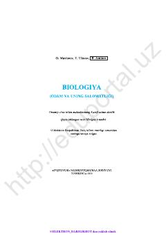

OV8-sinf o'quvchilari uchun odam anatomiyasi va salomatligi asoslari darsligi.
Ushbu kitob 8-sinf o'quvchilari uchun mo'ljallangan bo'lib, inson organizmining tuzilishi va uning salomatligini saqlash qoidalarini o'rgatadi. Darslikda anatomiya va fiziologiya asoslari sodda va tushunarli tarzda yoritib berilgan.